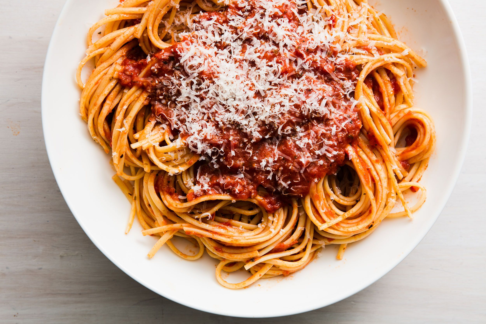

Spaghetti

How to Make Spaghetti
Spaghetti is an easy dish and staple of many household menus. It is cheap to make, and filling, so you can feed an entire family for less. This is essential these days.
You can also tweak and modify the recipe to make it your own! Add veggies, cheese, or different protein choices as you see fit!
Ingredients
- Spaghetti noodles
- Pasta sauce
- Protein (Ground beef or sausage)
- Cheese (optional)
Steps
- Bring a large pot of water to a boil. While the water is heating up, begin to brown your meet in a skillet.
- Once the water has come to a full boil, add your pasta to it, stirring occasionally to prevent it from sticking.
- After the meat has fully cooked, drain the meat and return it to the pan.
- Add your pasta sauce to the meat. You can use a premade sauce, or make your own using recipes found online. Mix well, and heat back to a simmer.
- Once the pasta is tender, drain the water. Return the pasta to the pot, and add a touch of olive oil to prevent clumping.
- Place a generous amount of pasta on a large plate, and top with the meat sauce. Add grated parmasean, or another cheese, and enjoy!